本手册从前端功能操作视角介绍 Flow Engine 的能力与使用方式，面向业务用户、前端开发与实施人员。内容涵盖 PC 端首页导航、流程设计、待办中心、流程审批，以及移动端的待办与审批操作，所有界面均配以真实截图说明。
Flow Engine 提供端到端的工作流能力，从前端操作视角分为以下功能域：
流程列表、基本信息、流程画布编排、节点配置、表单设计、版本管理
我的待办、我的已办、全部流程、发起流程，各列表点击进入详情/审批
流程详情、流程记录轨迹、审批意见填写、8 种审批动作
移动端首页、待办/已办/全部、流程申请与审批、流程详情
用户与流程管理员维护
流程定义 JSON 导入/导出，跨环境迁移
| 分类 | 节点 | 用途 |
|---|---|---|
| 起止 | START / END | 流程开始 / 结束 |
| 人工 | APPROVAL / HANDLE | 审批节点 / 办理节点 |
| 分支-条件 | CONDITION / CONDITION_BRANCH / CONDITION_ELSE_BRANCH | 互斥条件分支（满足一个走一个） |
| 分支-包容 | INCLUSIVE / INCLUSIVE_BRANCH / INCLUSIVE_ELSE_BRANCH | 可同时满足多分支 |
| 分支-并行 | PARALLEL / PARALLEL_BRANCH | 所有分支并行执行 |
| 分支-人工 | MANUAL / MANUAL_BRANCH | 人工选择走哪条分支 |
| 路由 | ROUTER | Groovy 脚本决定下一节点 |
| 其他 | NOTIFY / DELAY / SUB_PROCESS / TRIGGER | 抄送 / 延时 / 子流程 / 触发 |
| 动作 | 类型 | 操作效果 |
|---|---|---|
| 通过 | PASS | 流程继续向下流转 |
| 拒绝 | REJECT | 按拒绝配置结束或退回 |
| 退回 | RETURN | 退回到指定历史节点 |
| 转办 | TRANSFER | 转给他人审批，自己不再处理 |
| 委派 | DELEGATE | 委派他人审批，其完成回到自己 |
| 加签 | ADD_AUDIT | 增加会签人 |
| 保存 | SAVE | 暂存表单，不触发流转 |
| 自定义 | CUSTOM | 自定义按钮，脚本驱动 |
PC 端（app-pc）登录后进入首页，首页以导航卡片形式展示各功能入口，点击进入对应模块。
| 导航入口 | 功能 |
|---|---|
| 流程设计 | 进入流程定义列表，编排/配置/发布流程 |
| 待办中心 | 我的待办 / 我的已办 / 全部流程 / 发起流程 |
| 流程演练 | Mock 实例管理，无真实库演练流程 |
| 用户管理 | 用户与流程管理员维护 |
从首页进入 流程设计，首先看到流程定义列表，展示已存在的流程定义，可新建、编辑、删除、启停、导入导出。
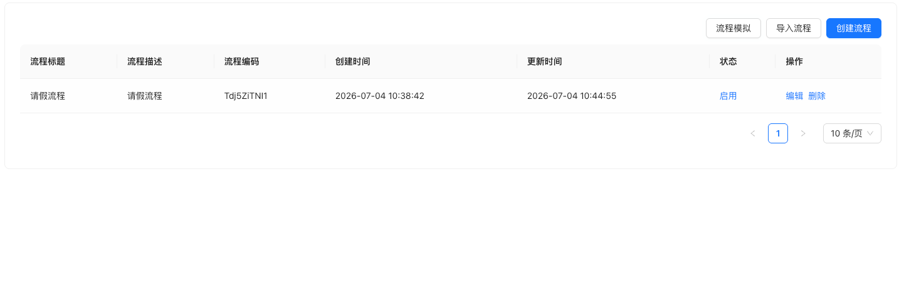
/api/cmd/workflow/changeState）、删除（/api/cmd/workflow/remove）进入设计器后，首先配置流程的基本信息（标题、编码、分类等），需要更深入配置时展开"更多参数"。
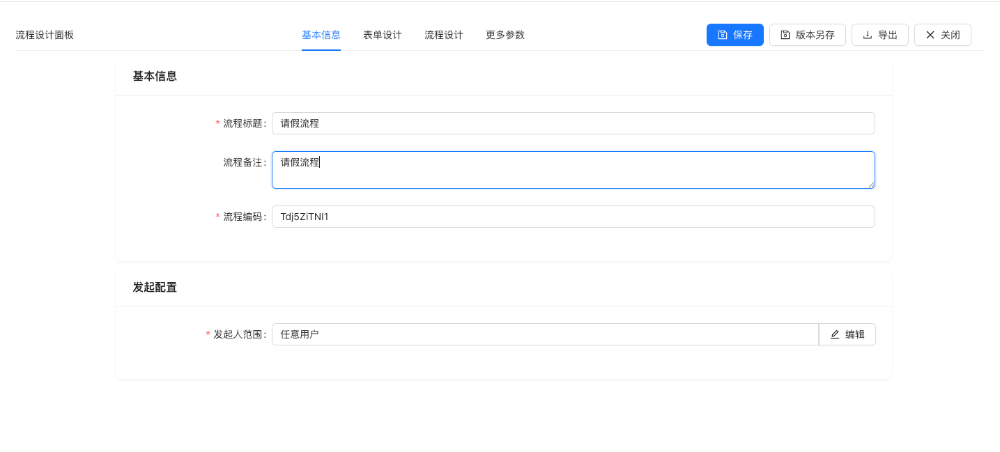
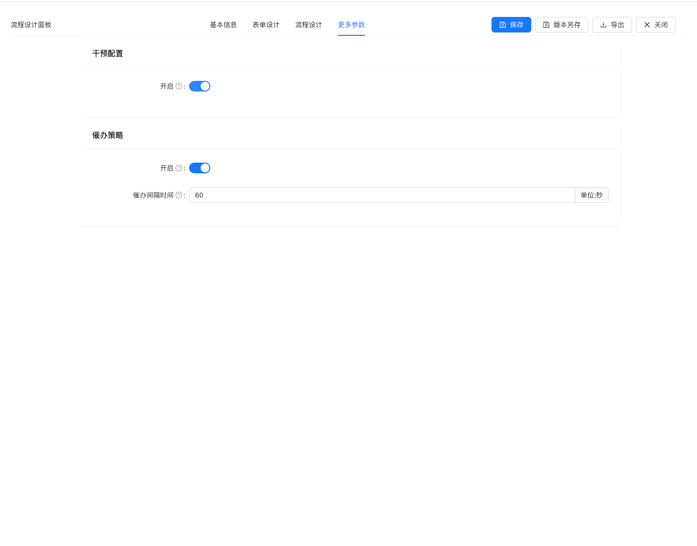
| 属性 | 说明 |
|---|---|
| 流程标题 | 流程的显示名称，便于识别与管理（必填） |
| 流程备注 | 对流程用途、规则的补充说明，可选填 |
| 流程编码 | 流程的唯一编码，用于系统识别与接口调用（必填） |
| 发起人范围 | 通过脚本限定有权发起该流程的人员范围（必填） |
| 属性 | 说明 |
|---|---|
| 干预配置 — 开启 | 开启后，允许流程管理员协助用户操作该流程 |
| 催办 — 开启 | 开启后，允许用户对当前审批人发起催办 |
| 催办间隔时间 | 两次催办之间的最小间隔（单位：秒），仅在启用催办时生效 |
流程画布是设计器的核心，基于 @flowgram.ai 固定布局编辑器，支持拖拽节点、连线编排流程。19 种节点从节点库拖入画布。
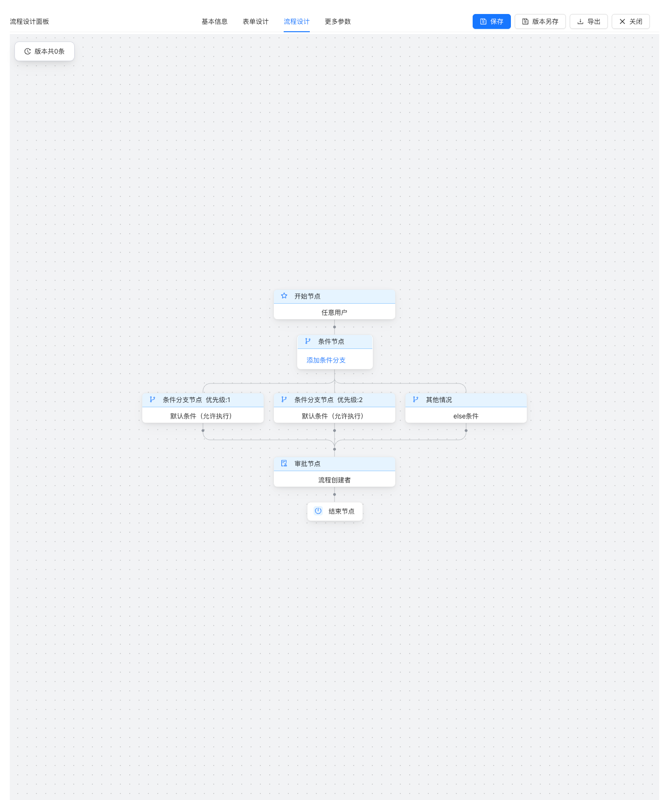
选中画布上的节点后，节点面板展示该节点的配置，包括节点基本信息、按钮配置（启用哪些审批动作）、权限配置（表单字段权限、审批人加载方式等）。
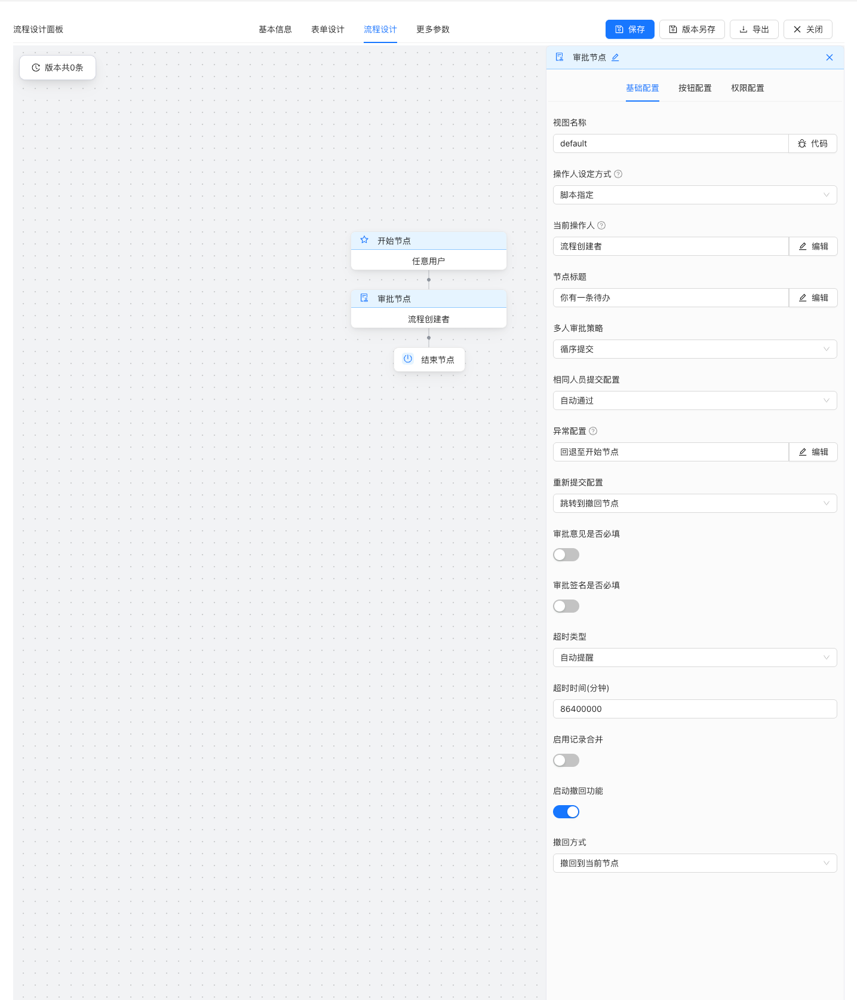
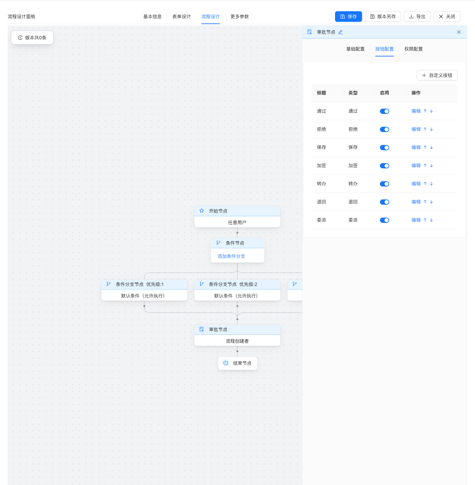
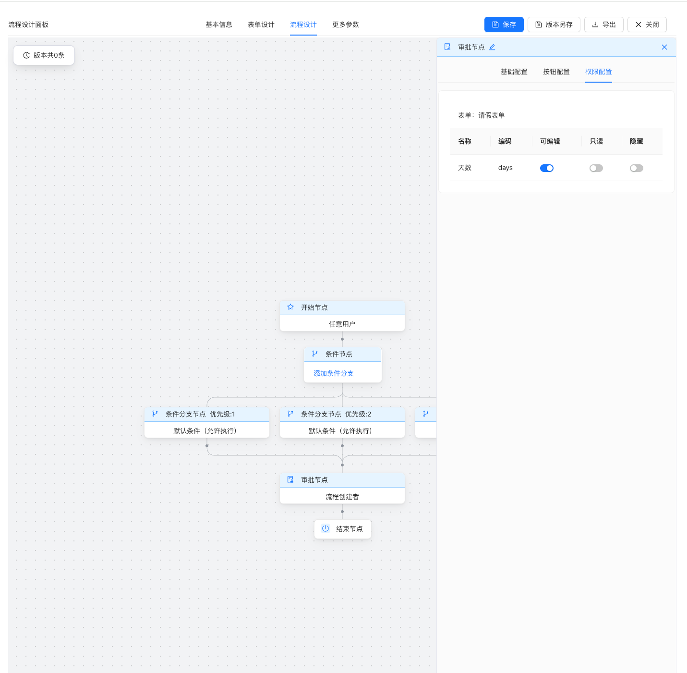
不同节点类型可配置的属性不同，以下按节点分组说明。各属性在节点面板标题旁的问号图标内均有相同提示，hover 可查看。
| 属性 | 适用节点 | 说明 |
|---|---|---|
| 待办标题 | 全部 | 通过脚本设置待办消息的展示标题 |
| 优先级 | 全部 | 数字越小优先级越高；当多个分支或节点可同时执行时，按此排序 |
| 视图名称 | APPROVAL/HANDLE | 节点绑定的展示视图，用于自定义该节点的表单或界面展示 |
| 按钮配置（动作启用） | APPROVAL/HANDLE | 勾选启用 8 种动作（PASS/REJECT/RETURN/TRANSFER/DELEGATE/ADD_AUDIT/SAVE/CUSTOM） |
| 表单字段权限 | APPROVAL/HANDLE | 每字段必填 / 可编辑 / 只读 / 隐藏 |
| 属性 | 说明 |
|---|---|
| 操作人设定方式 | 脚本指定（SCRIPT，默认）/ 发起人设定（INITIATOR_SELECT）/ 审批人设定（APPROVER_SELECT，由当前审批人为下游指定） |
| 设定人员范围 / 当前操作人 | 发起人/审批人设定模式下，设定可选人员范围（留空表示不限范围，可选任意人）；脚本模式下通过脚本设定该节点操作人 |
| 多人审批策略 | 循序提交（SEQUENCE，依次审批）/ 合并审核（MERGE，按会签比例合并判定）/ 任意审核（ANY，任一人审核即流转）/ 任意一人（RANDOM_ONE，随机指定一人审核） |
| 会签通过比例 | 合并审核时，通过人数达到该比例才视为该节点通过，取值 0~1 的小数（如 0.5 表示半数通过） |
| 相同人员提交配置 | 自动通过（AUTO_PASS，提交人与审批人同一人时自动通过）/ 手动审批（MANUAL_PASS，仍需手动审批） |
| 启用合并审批 | 开启后，当流程流转到该节点时，同一流程下的多条审批记录将自动合并到一起进行审批 |
| 审批意见是否必填 | 开启后，审批人提交审批时必须填写审批意见 |
| 审批签名是否必填 | 开启后，审批人提交审批时必须完成签名 |
| 启用撤回功能 | 开启后，审批人在自己审批通过后可发起撤回，撤回后流程回到本节点重新审批（仅"已通过"状态且由原审批人发起时有效） |
| 撤回方式 | 撤回到当前节点（REVOKE_CURRENT，无论下级是否已审批均可撤回，下级记录全部作废）/ 撤回上级节点（REVOKE_NEXT，仅当下级节点尚未审批时才允许撤回，下级一旦审批完成则无法撤回） |
| 重新提交配置 | 跳转到撤回节点（RESUME，退回后直接跳转到上次撤回的节点继续审批）/ 从头逐级提交（CHAIN，退回后回到流程起点逐级重新提交） |
| 超时类型 | 自动提醒（REMIND，超时后发送提醒，不改变审批状态）/ 自动同意（PASS，超时后自动通过）/ 自动拒绝（REJECT，超时后自动拒绝） |
| 超时时间(分钟) | 触发超时动作的等待时长，单位为分钟 |
| 异常配置 | 当节点未能匹配到任何操作人时触发的脚本配置，可用于兜底处理 |
| 属性 | 适用节点 | 说明 |
|---|---|---|
| 路由表达式 | ROUTER | 路由节点的判断脚本，根据返回值决定下一个流转节点 |
| 条件表达式 | CONDITION_BRANCH / INCLUSIVE_BRANCH | 条件分支的判断脚本，返回 true 时流程走该分支 |
| 子流程表达式 | SUB_PROCESS | 子流程触发的脚本，用于构造并在当前流程中发起一个子流程 |
| 创建后并提交 | SUB_PROCESS | 开启后子流程创建完毕后自动提交；关闭则仅创建不提交 |
| 触发表达式 | TRIGGER | 节点触发时执行的脚本，可用于动态计算或副作用处理 |
| 延迟时间类型 | DELAY | 延迟时间的计量单位（秒 / 分 / 时 / 天） |
| 延迟时间 | DELAY | 节点执行的延迟时长，需配合延迟时间类型一起使用 |
表单设计用于定义流程的业务表单字段（如请假的天数、事由）。可新增字段、编辑字段属性、调整排序。表单字段在发起流程与审批时由表单引擎渲染。
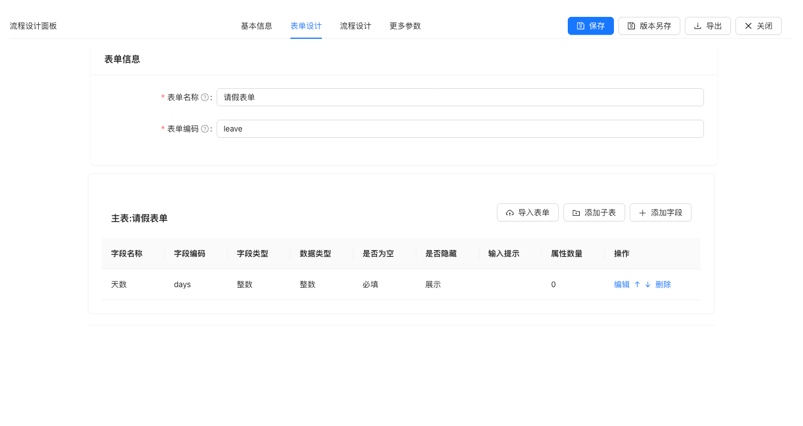
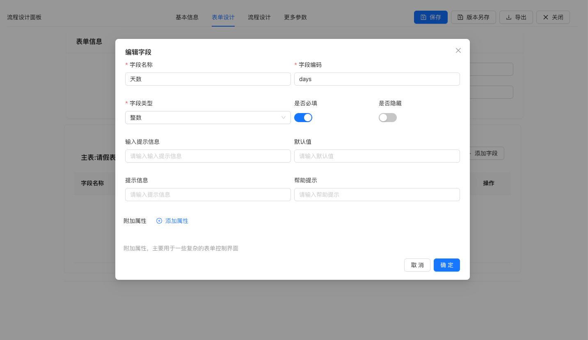
| 属性 | 说明 |
|---|---|
| 表单名称 | 主表的显示名称（必填） |
| 表单编码 | 主表的唯一编码，用于系统识别与数据存取（必填） |
| 子表名称 | 子表的显示名称（必填） |
| 子表编码 | 子表的唯一编码，用于系统识别与数据存取（必填） |
| 属性 | 说明 |
|---|---|
| 字段名称 | 表单字段的显示名称（必填） |
| 字段编码 | 表单字段的唯一编码，用于数据存取，建议使用英文（必填） |
| 字段类型 | 表单字段的数据类型与展示组件（必填） |
| 是否必填 | 开启后，该字段为必填项 |
| 是否隐藏 | 开启后，该字段在表单中不展示（仍可参与逻辑） |
| 输入提示信息 | 字段输入框内的占位提示文字 |
| 默认值 | 字段新增时的初始默认值 |
| 提示信息 | 字段标签旁的提示说明，hover 时显示 |
| 帮助提示 | 字段下方的帮助说明文字 |
| 附加属性 | 附加属性，主要用于一些复杂的表单控制界面 |
registerFormItems() 注册自定义字段类型，业务方可扩展自定义表单项。流程定义支持多版本，便于不停机迭代。设计完成后保存为新版本并发布启用。
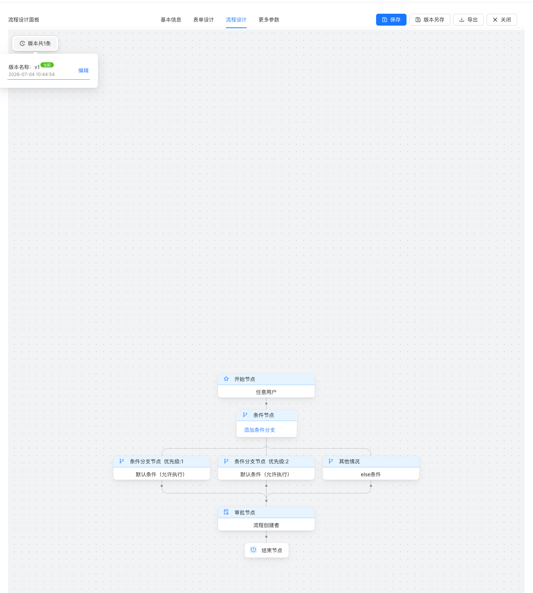
| 操作 | 说明 |
|---|---|
| 保存新版本 | 设计器保存时输入版本名，创建新版本并设为当前启用 |
| 切换版本 | 版本列表中选择版本切换启用（/api/cmd/workflow/changeVersion），新发起流程走该版本 |
| 修改版本名 | /api/cmd/workflow/updateVersionName |
| 删除版本 | /api/cmd/workflow/deleteVersion |
| 导入/导出 | 设计器导出 JSON 文件，或上传 JSON 导入（/api/cmd/workflow/import） |
待办中心聚合 我的待办 / 我的已办 / 全部流程 三类记录，并提供 发起流程 入口。
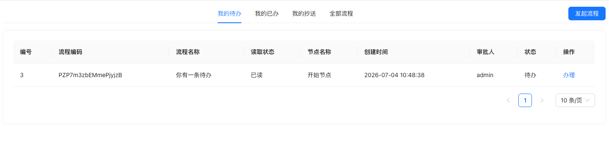
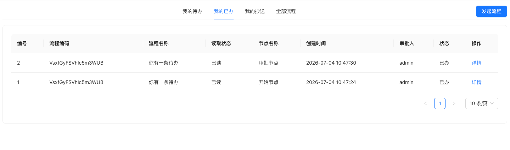
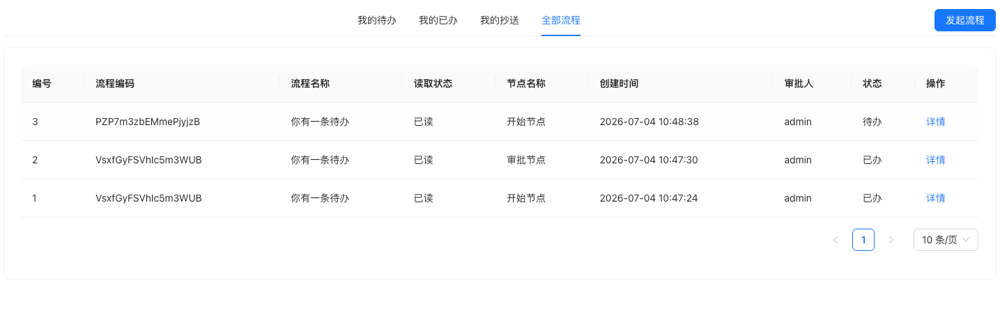
/api/query/record/{done,list}）待办中心的"发起流程"入口用于发起新的流程实例：选择流程定义后填写表单并提交。
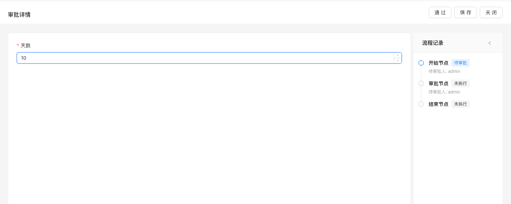
审批人在"我的待办"中点击记录进入审批页，填写审批意见后选择动作（通过/拒绝/退回等）。
| 场景 | 操作 | 对应接口 |
|---|---|---|
| 发起流程 | 选流程 → 填表单 → 提交（发起动作通常为开始节点的通过） | POST /api/cmd/record/create |
| 执行审批动作 | 填审批意见/签名 → 选退回节点/转办人等 → 点击动作按钮 | POST /api/cmd/record/action |
| 撤销/催办/删除 | 发起人可撤销/催办；仅开始节点可删除 | /api/cmd/record/{revoke,urge,delete} |
流程详情展示一条流程实例的完整信息：业务表单、流程记录轨迹（已流转节点、当前节点、各节点的审批人与意见）。
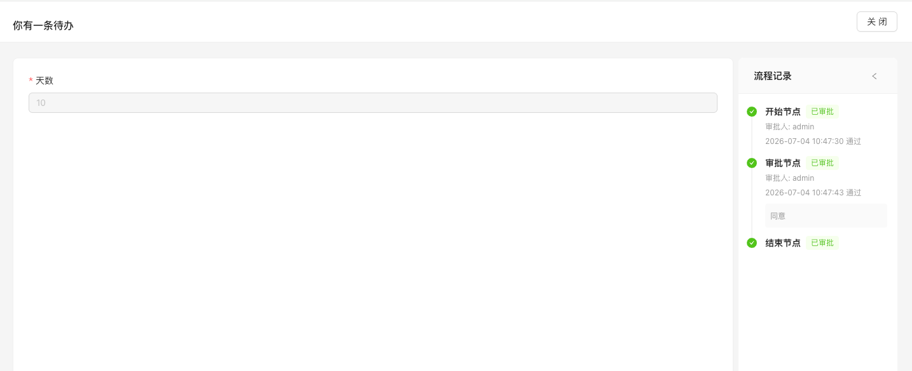
流程详情中的"流程记录/流程轨迹"展示每个节点的处理状态、处理人、处理时间、审批意见。审批人在审批页填写意见后，意见会记录在轨迹中。
| 三类核心记录 | 职责 |
|---|---|
| FlowRecord | 流程执行记录（TODO/DONE 状态） |
| FlowTodoRecord | 待办记录 |
| FlowTodoMerge | 待办合并关系（开启合并时产生） |
审批人在审批页底部看到由节点"按钮配置"决定的可执行动作按钮：
| 动作 | 操作步骤 |
|---|---|
| 通过 PASS | 填写（必填）审批意见/签名 → 点击通过 → 流程向下一节点流转 |
| 拒绝 REJECT | 填写意见 → 拒绝 → 按配置结束流程或退回 |
| 退回 RETURN | 选择退回目标节点（只能退回历史 START/APPROVAL/HANDLE，不能退回当前/后续/结束节点）→ 填意见 → 退回 |
| 转办 TRANSFER | 选择转办人员 → 流程转给他人，自己不再处理 |
| 委派 DELEGATE | 选择委派人员 → 他人审批通过后流程回到自己 |
| 加签 ADD_AUDIT | 选择加签人员 → 增加会签人，会签完成后继续 |
| 保存 SAVE | 暂存当前表单与意见，不触发流转 |
| 自定义 CUSTOM | 触发节点配置的脚本/前端事件 |
当流程流转到 MANUAL 节点，点击通过后引擎不立即流转，返回可选分支列表（responseType: MANUAL_NODE_SELECT）。前端弹出让用户选择走哪条分支，把选中的 manualNodeId 放入 advice 再次提交。
对于 APPROVER_SELECT 模式的下游节点，审批人在通过时需在 operatorSelectMap 中为其指定审批人；INITIATOR_SELECT 模式则由发起人在发起流程时指定。
用户管理用于维护系统用户与流程管理员（isFlowManager），审批人由 FlowOperatorGateway 按用户体系加载。
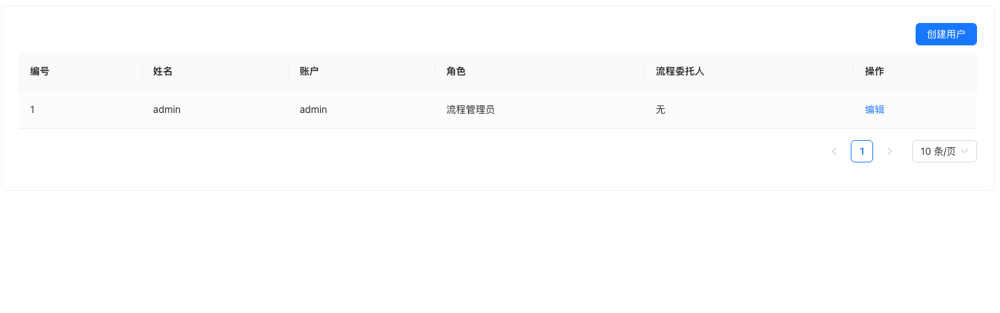
/api/cmd/workflow/mock 需流程管理员权限）。app-mobile 提供精简的移动审批能力（无流程设计器，设计在 PC 完成）。移动端首页与待办列表如下：
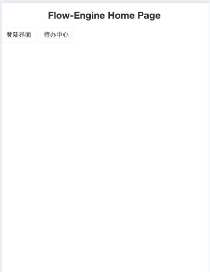
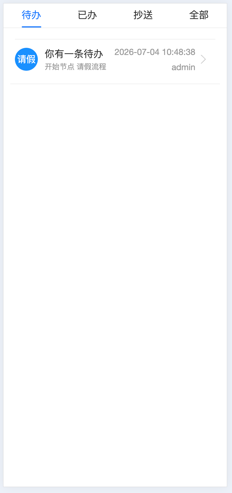
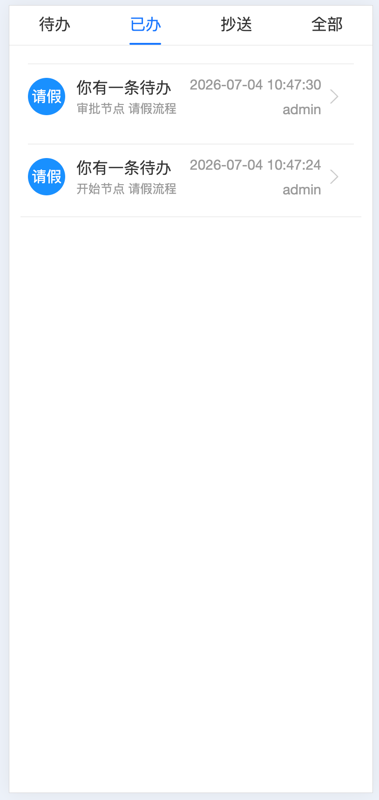
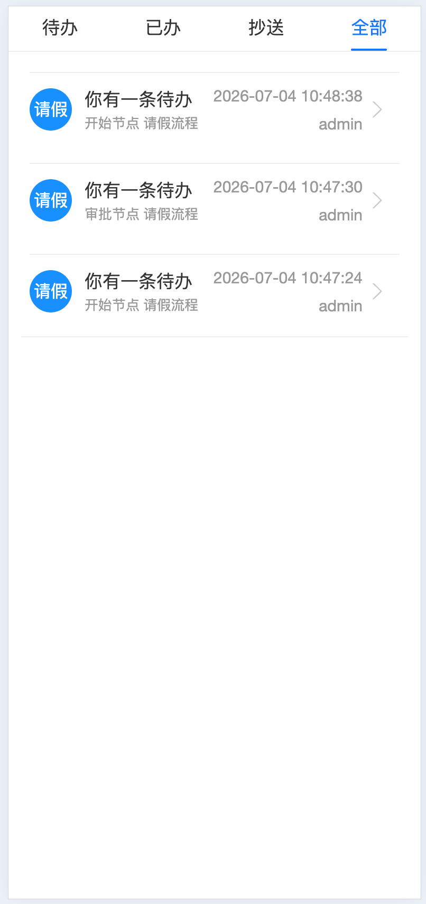
移动端发起流程申请时填写表单，提交后生成流程记录；审批人在待办点击进入后填写审批意见。
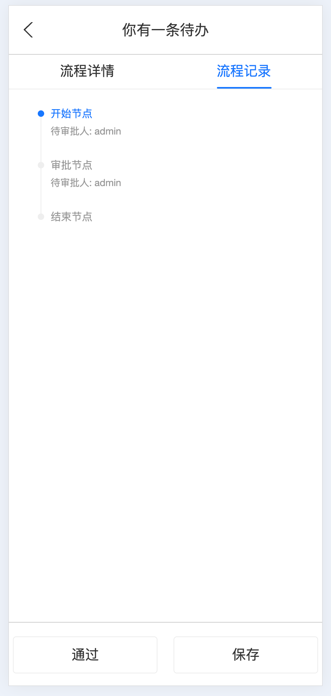
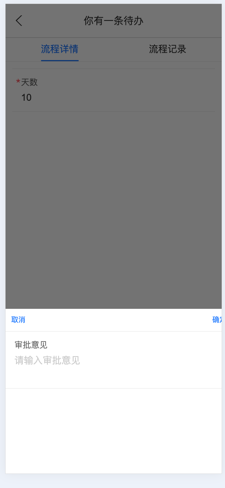
点击待办记录进入流程审批，可查看流程详情与流程记录，并执行动作。
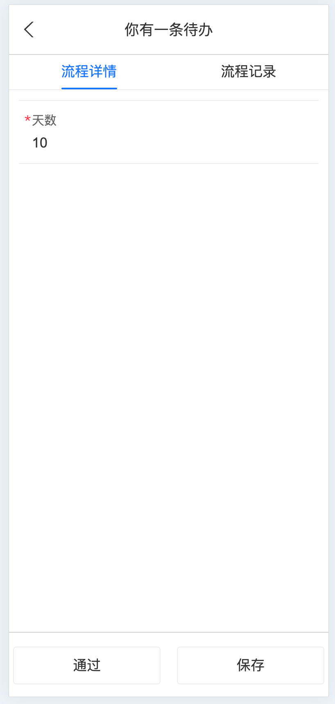
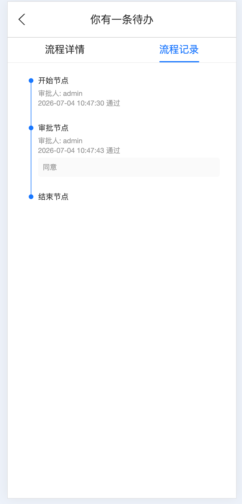
flow-mobile-ui 提供 TextIcon 等封装EventBus 监听事件联动| 问题 | 解答 |
|---|---|
| 审批时按钮只有部分？ | 动作按钮由节点"按钮配置"决定，在设计器节点面板勾选所需动作 |
| 退回节点选不到目标？ | 退回目标只能是历史 START/APPROVAL/HANDLE 节点，且不能是当前节点或其后续节点、不能是结束节点 |
| 表单字段不显示？ | 字段权限设为"隐藏"时不显示；字段类型需在 registerFormItems 中注册 |
| 发起流程选不到流程？ | 流程定义可能被停用，或没有已启用版本 |
| 审批人不对？ | 检查节点"审批人加载方式"与脚本；INITIATOR_SELECT 需发起时指定，APPROVER_SELECT 需上游指定 |
| PC 与移动端功能差异？ | PC 含流程设计与完整审批；移动端仅审批与查询，设计在 PC 完成 |
| 如何不登录调试？ | 请求加 ?operatorId=xxx 指定操作者；用 ?mockKey=xxx 走 Mock 实例 |
| 流程定义如何迁移？ | 设计器导出 JSON → 目标环境导入（/api/cmd/workflow/import） |
| 自定义按钮怎么做？ | 通过 ActionFactory 注册 CUSTOM 类型组件 + 节点按钮配置启用 CUSTOM + 配置触发脚本 |
配套文档：集成手册（前后端集成+示例分析） · 文档入口 · 能力清单 capabilities · 规范 conventions